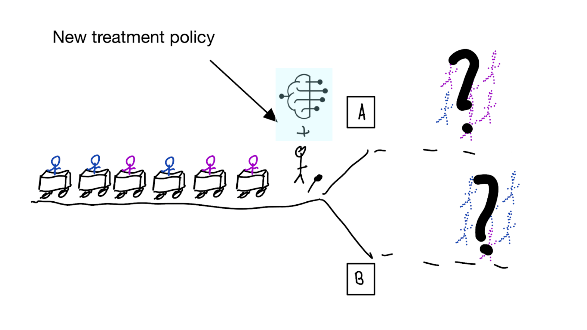
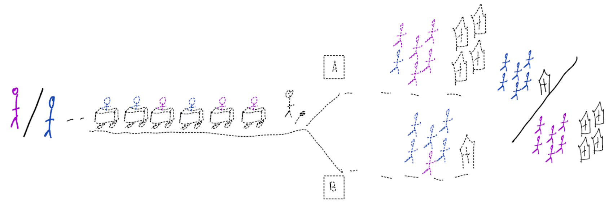
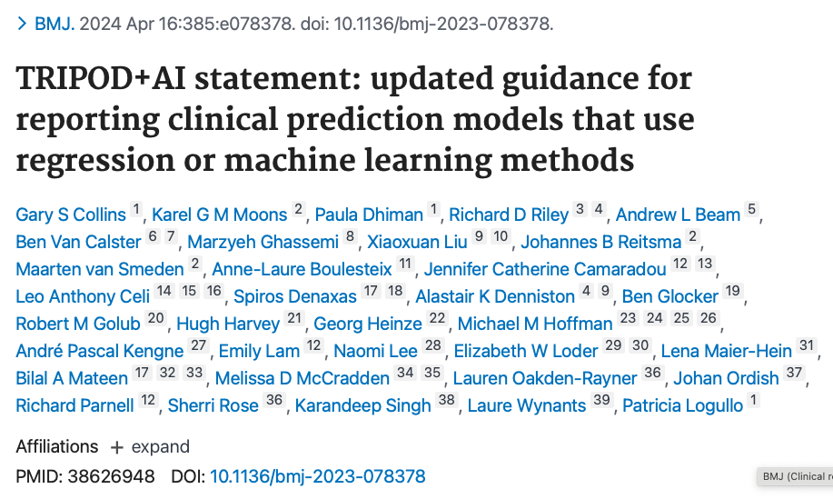

Medical imaging and AI for decision support
Medical Imaging AI lab meeting
Department of Data Science Methods, Julius Center, University Medical Center Utrecht
2024-07-08
Uses of AI in medical imaging
Use AI for medical imaging
to make healthcare easier or more efficient
Acquisition (\(S \to X\))
- k-space to MRI image
- raw projection data to CT image
detection / segmentation (\(X \to X\))
- segmenting organs at risk in radiotherapy
inference / diagnosis (\(X \to D\), both at prediction time)
- medical diagnosis
- psuedo CT from MRI
Use AI for medical imaging
to make healthcare better (improve decisions)
prognosis (\(X \to Y\), \(Y\) in the future)
- expected survival time given CT-scan
treatment effect (\(X\) determines effect of a treatment \(T\) on outcome \(Y\) in the future)
Why would you estimate treatment effects based on images?
- treatments have different effects on patients based on their (disease) characteristics
- for example, whether tamoxifen increases survival for breast cancer patients depends on whether their tumor is hormone sensitive
- some characteristics may be well captured in medical imaging:
- T-cell distributions around tumors related to effect of immunotherapy in cancer
- heterogeneity of tumor on CT may predict response to radiotherapy
- holistic view of ‘body composition’ on CT-scans determines whether patient can tolerate chemotherapy
How to estimate treatment effects based on images?
In principle the same as estimating a subgroup treatment effect (e.g. male vs female)
- Conduct a randomized controlled trial where the treatments of interest are randomly allocated
- Collect (imaging) data at randomization timepoint
- Use a statistical learning technique like TARnet (Shalit, Johansson, and Sontag 2017) to estimate outcomes conditional on image and treatment
- conditional treatment effect \(= f(X,T=1) - f(X,T=0)\)
What if you cannot do a (big enough) RCT?
Emulate / approximate the ideal trial in observational data you do have, using causal inference techniques
(which rely on untestable assumptions)
Improving decisions with AI
- prognosis (\(X \to Y\), \(Y\) in the future)
- treatment effect (\(X\) determines effect of a treatment \(T\) on outcome \(Y\) in the future)
- Whereas treatment effect estimation is typically thought of as a causal task requiring causal approaches (e.g. randomized controllerd trials)
- Prognosis models are often developed without any causal thinking (if it predicts it predicts)
- but then advertised for making treatment decisions.
The in-between: using prediction models for (medical) decision making
- prognosis (e.g. survival given medical image)

Using prediction models for decision making is often thought of as a good idea
For example:
- give chemotherapy to cancer patients with high predicted risk of recurrence
- give statins to patients with a high risk of a heart attack
TRIPOD+AI on prediction models (collinsTRIPODAIStatement2024?)
“Their primary use is to support clinical decision making, such as … initiate treatment or lifestyle changes.”
This may lead to bad situations when:
- ignoring the treatments patients may have had during training / validation of (AI) prediction model
- only considering measures of predictive accuracy as sufficient evidence for safe deployment
When accurate prediction models yield harmful self-fulfilling prophecies


Building models for decision support without regards for the historic treatment policy is a bad idea



The question is not “is my model accurate before / after deployment”,
but did deploying the model improve patient outcomes?
Treatment-naive prediction models


\[\begin{align} E[Y|X] \class{fragment}{= E[E_{t~\sim \pi_0(X)}[Y|X,t]]} \end{align}\]
Treatment-naive prediction models
(Results from W. A. C. van Amsterdam, van Geloven, et al. 2024)
- good or bad discrimination post deployment may be a sign of a harmful or a beneficial policy change
- models that are perfectly calibrated before and after deployment are certainly not useful for decision making because they didn’t change the distribution
Is this obvious?
Prediction modeling is very popular in medical research

Recommended validation practices and reporting guidelines do not protect against harm
because they do not evaluate the policy change

Bigger data does not protect against harmful prediction models
More flexible models do not protect against harmful prediction models


What to do?
What to do?
- Evaluate policy change (cluster randomized controlled trial)
- Build models that are likely to have value for decision making
Building and validating models for decision support
Deploying a model is an intervention that changes the way treatment decisions are made
How do we learn about the effect of an intervention?
With a randomized experiment
- for using a decision support model, the unit of intervention is usually the doctor
- randomly assign doctors to have access to the model or not
- measure differences in treatment decisions and patient outcomes
- this called a cluster RCT
- if using model improves outcomes, use that one
Using cluster RCTs to evaluated models for decision making is not a new idea (Cooper et al. 1997)
“As one possibility, suppose that a trial is performed in which clinicians are randomized either to have or not to have access to such a decision aid in making decisions about where to treat patients who present with pneumonia.”
What we don’t learn
was the model predicting anything sensible?
So build treatment-naive prediction models and trial them for decision support?
Not a good idea
- baking a cake without a recipe
- hoping it turns into something nice
- not pleasant to people that need to taste result of the experiment
- (i.e. patients may have side-effects / die)
We should build models that are likely to be valuable for decision making
- Build models that predict expected outcomes under hypothetical interventions (prediction-under-intervention models)
- doctor / patient can pick the treatment with best expected outcomes, depending on patient’s values and preferences
- whereas treatment-naive prediction models average out over the historic treatment policy, prediction-under-intervention allows the user to select a treatment option
Hilden and Habbema on prognosis (Hilden and Habbema 1987)
“Prognosis cannot be divorced from contemplated medical action, nor from action to be taken by the patient in response to prognostication.”
- prediction-under-intervention is not a new idea, but language and methods on causality have come a long way since (Hilden and Habbema 1987).
Estimand for prediction-under-intervention models
What is the estimand?
- prediction: \(E[Y|X]\)
- average treatment effect: \(E[Y|\text{do}(T=1)] - E[Y|\text{do}(T=0)]\)
- conditional average treatment effect: \(E[Y|\text{do}(T=1),X] - E[Y|\text{do}(T=0),X]\)
- prediction-under-intervention: \(E[Y|\text{do}(T=t),X]\)
using treatment naive prediction models for decision support
prediction-under-intervention

More on prediction-under-intervention models
development:
- ideally estimated from RCTs, but these are often too small or don’t measure the right data
- alternatively can use observational data and causal inference methods
- assumption of no unobserved confounding often hard to justify in observational data
- but there’s more between heaven (RCT) and earth (confounder adjustment)
- proxy-variable methods (e.g. Miao, Geng, and Tchetgen Tchetgen 2018; Wouter A. C. van Amsterdam et al. 2022)
- constant relative treatment effect assumption (e.g. Alaa et al. 2021; Wouter A. C. van Amsterdam and Ranganath 2023; Candido dos Reis et al. 2017)
- diff-in-diff
- instrumental variable analysis (Wald 1940; Puli and Ranganath 2021; Hartford et al. 2017)
- front-door analysis
- many of these have potential new applications with AI and medical imaging
Evaluation of prediction-under-intervention models
- prediction accuracy can be tested in RCTs, or in observational data with specialized methods accounting for confounding (e.g. Keogh and van Geloven 2024)
- in confounded observational data, typical metrics (e.g. AUC or calibration) are not sufficient as we want to predict well in data from other distribution than observed data (i.e. other treatment decisions)
- a new policy can be evaluated in historic RCTs (e.g. Karmali et al. 2018)
- ultimate test is cluster RCT
- if not perfect, likely a better recipe than treatment-naive models
Take-aways
- deploying models for decision support is an intervention and should be evaluated as such
- when developing or evaluating (AI) prediction models for medical decisions, think about
- what is the effect of using this model on medical decisions?
- what is the effect of this policy change on patient outcomes?
- prediction-under-intervention models have a foreseeable effect on patient oucomes when used for decision making
From algorithms to action: improving patient care requires causality (W. A. C. van Amsterdam, Jong, et al. 2024)
When accurate prediction models yield harmful sel-fulfilling prophecies (W. A. C. van Amsterdam, van Geloven, et al. 2024)
References

©Wouter van Amsterdam — WvanAmsterdam — wvanamsterdam.com/talks